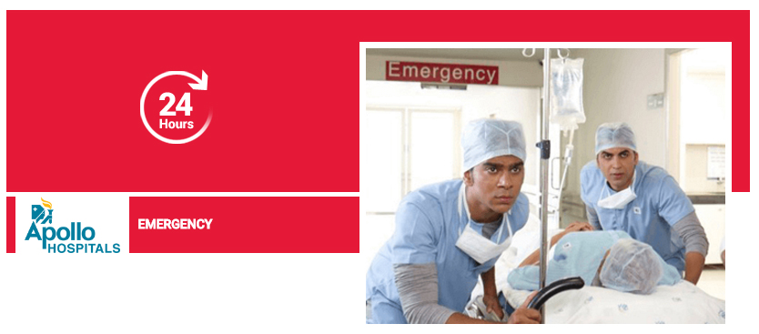

Qeybta Gallery-ga waxaad kaheli kartaa sawiro muujinaayo Cisbitaalka ,qalabka caafimaadka iyo shaqaalaha oo shaqadooda kujira. Tani waxay kaa caawineysaa inaada fahanto sida aan ushaqeeno iyo tayada adeega aan bixino.
